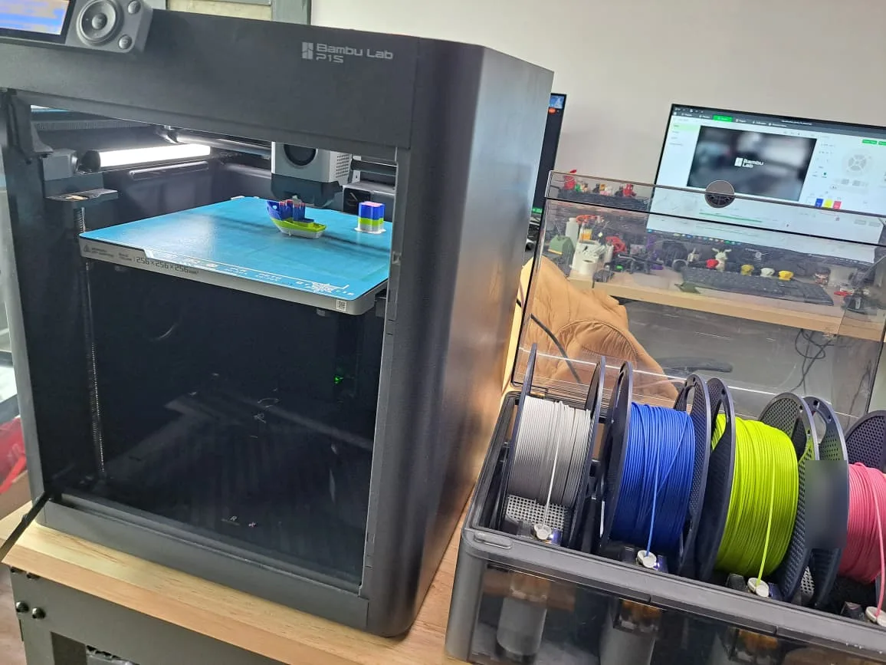
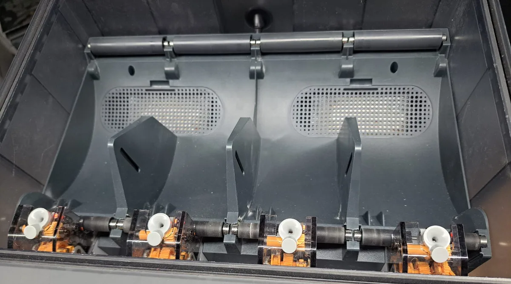
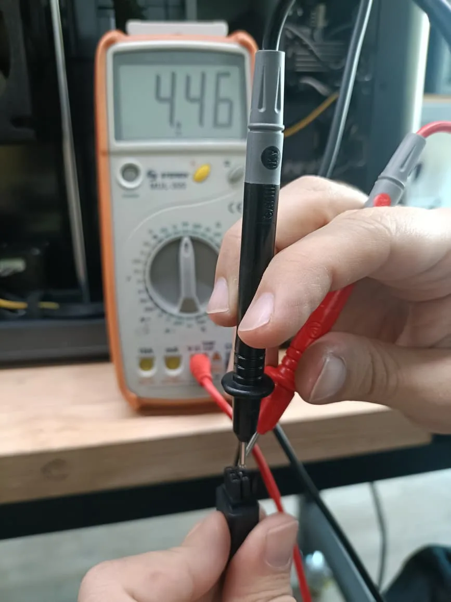
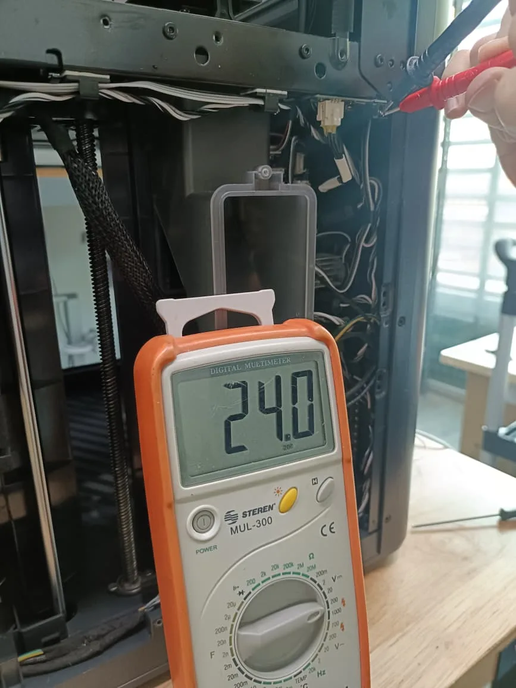
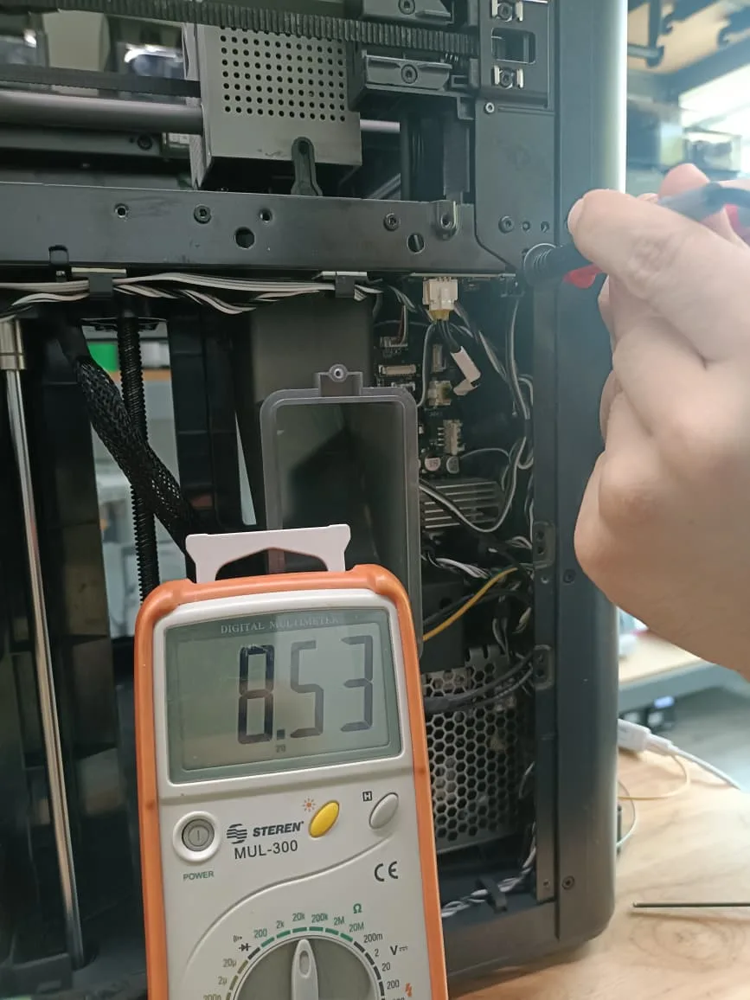
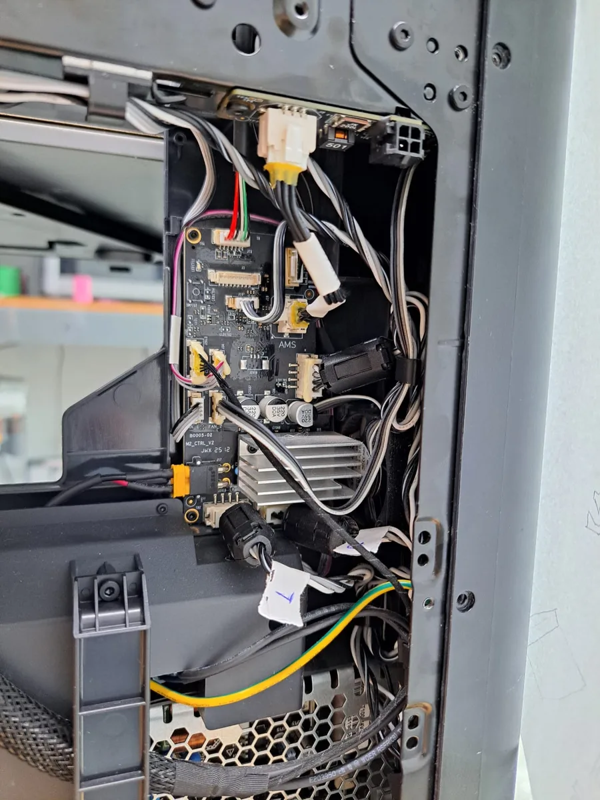
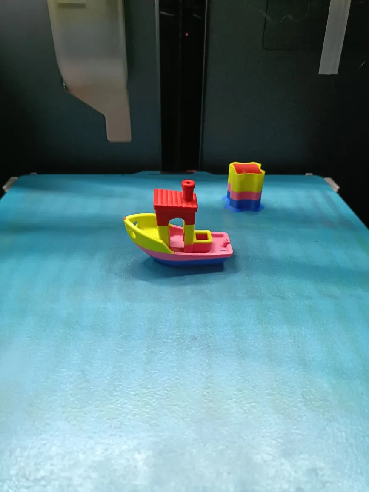

Mi P1S no reconoce el AMS: cuando la falla está en la impresora
· Caso del taller
Cuando una P1S deja de ver su AMS, casi todos culpan al AMS. Tiene sentido: es la pieza que deja de funcionar. Pero en este caso el AMS estaba bien. El problema vivía dentro de la impresora, y la única forma de saberlo fue medir y descartar una cosa a la vez.

Lo que vio el dueño
La queja fue corta: la impresora no reconoce el AMS. Sin AMS, adiós multicolor y adiós cambio automático de rollo. La impresora sigue imprimiendo con el carrete externo, así que muchos se quedan así meses.

Primero, el cable
Entre la impresora y el AMS va un cable de cuatro hilos: dos de corriente y dos de comunicación (señal A y señal B). Es lo primero que se revisa porque es lo más barato de cambiar. Medimos la resistencia de cada hilo de punta a punta y todos salieron dentro de valores normales. El cable estaba bien.

Luego, voltaje y señales en la impresora
Con la impresora abierta medimos directo en el conector. La alimentación daba sus 24 V, como debe. También medimos la señal A y la señal B contra tierra, y la resistencia entre las dos señales. Con eso se descarta que el AMS no tenga corriente o que haya un corto evidente en la línea de comunicación.


Cambiar una cosa a la vez
Con el cable y el voltaje bien, quedaban dos sospechosos: el AMS o la placa principal de la impresora, la MC (Machine Controller). Así que probamos el AMS en otra impresora de la serie P. Resultado: tampoco respondía bien. Hasta ahí parecía culpa del AMS.
La prueba que lo resolvió fue la siguiente: poner en esta P1S una placa MC de otra impresora de la misma línea. Con esa placa, el AMS respondió a la primera. La conclusión fue que la placa MC de esta P1S estaba dañada y su salida hacia el AMS ya no funcionaba.
Por eso no sirve adivinar. Si hubiéramos cambiado el AMS por lo que pasó en la primera prueba, el dueño habría pagado una pieza cara y la falla habría seguido ahí.

Qué hicimos
Recomendamos cambiar la tarjeta MC y mandamos la cotización con las fotos de cada medición, para que el dueño viera lo mismo que nosotros. Con una placa MC que funciona, la impresora reconoce el AMS al encender, y así la probamos imprimiendo a cuatro colores antes de entregarla.

¿Es el AMS o es la impresora?
Desde afuera las dos fallas se ven igual: la pantalla no muestra el AMS. La diferencia está en dónde se corta el camino. El AMS necesita tres cosas para aparecer: corriente, un cable sano y una impresora que le hable. Si falta la corriente, el AMS no prende ninguna luz. Si el cable tiene un hilo roto, a veces aparece y a veces no, sobre todo cuando lo mueves. Si la falla es de comunicación, en la impresora o en la placa del AMS, prende, intenta conectarse y se queda en error.
Por eso el orden importa: primero lo que se mide fácil y sale barato, al final las placas.
Lo que puedes revisar en casa
- Reinicia las dos. Apaga la impresora, desconecta el AMS, espera un minuto y vuelve a conectar antes de encender.
- Revisa el cable y sus conectores. Que entren hasta el fondo, sin pines doblados ni manchas verdes. Si tienes otro cable de AMS, pruébalo.
- Actualiza el firmware de la impresora y del AMS desde la pantalla o Bambu Handy.
- Fíjate en los indicadores del AMS. Si no prende nada, el problema es de corriente; si prende y luego marca error, es de comunicación.
- Si tienes acceso a otro AMS u otra impresora, cruza las pruebas. Pero ojo: como en este caso, una sola prueba puede engañar.
Cuándo traerla al taller
Si ya probaste lo de arriba y el AMS sigue sin aparecer, lo que sigue es medir con la impresora abierta. Trae la impresora con su AMS y su cable; así podemos probar cada parte por separado y decirte con fotos cuál es la que falla antes de cambiar nada.
Sigue leyendo
¿Tu impresora tiene algo parecido?
Diagnóstico en el taller con fotos de lo que encontramos y la cotización antes de cambiar cualquier pieza. Recibimos impresoras de todo México por paquetería.